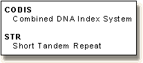

Blackett Family DNA Activity 2OverviewDNA Analyst Bob Blackett has graciously provided The Biology Project with sample data from his own work. In this activity, you will learn the concepts and techniques behind DNA profiling of the 13 core CODIS "Short Tandem Repeat" loci used for the national DNA databank. You will then have the opportunity to collect and interpret actual STR data, and to answer one or more of the following questions:
Alternatively, you may wish to create your own activities, based on some suggestions for open-ended inquiry that are offered below. This activity is aimed at students with a basic knowledge of DNA structure, Mendelian genetics, and human pedigree analysis. A good preparation for this activity would be to review our problem sets and tutorials in Human Biology.The Science of STR DNA Profile Analysis
Structured Inquiry Activities for StudentsSome representative activities involving data collection, interpretation, and analysis using Bob Blackett's data.
Open Ended Activities for StudentsHere we suggest some starting points for in depth exploration of the topic of STR DNA profiling. If you have additional suggestions for this section, contact the author about including open-ended inquiry that you have developed for your students. If selected, we will cite you and your school. Introduction : Overview | STR P | CODIS | Analysis | Inheritance | Frequency Calc. Activities : Pedigree | Collect data | Paternity testing | Missing person | RCMP freq. calc.
The Biology Project
http://biology.arizona.edu
|